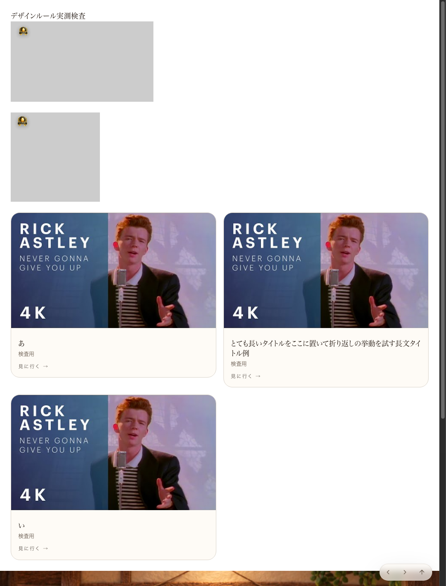
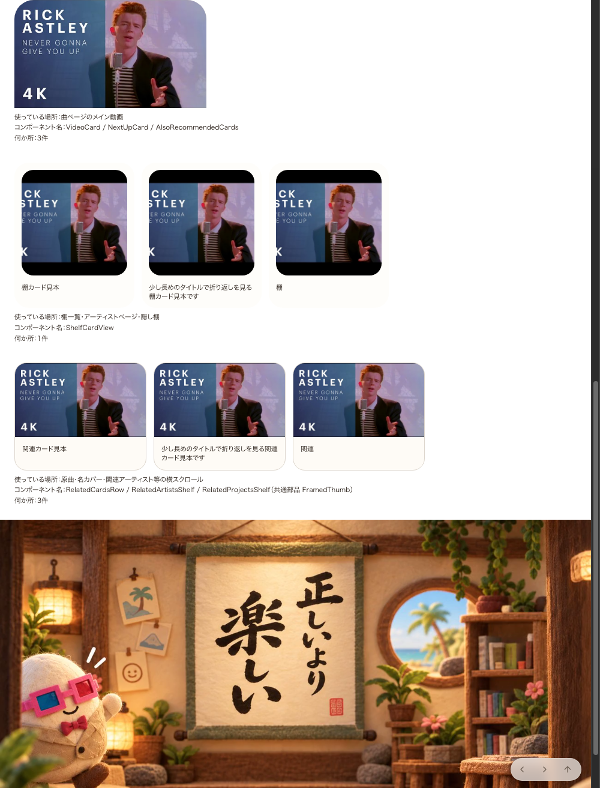
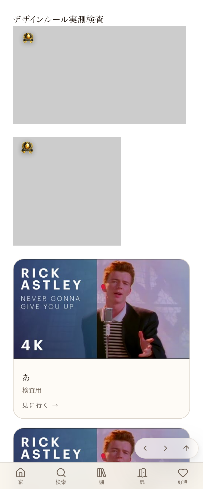

共有資料の一覧 ／ 確認ページ #897 サムネの大きさにA/B/Cの名前をつけた
#897 サムネの大きさにA/B/Cの名前をつけた
2026-09-17 実装・main合流・本番(GitHub Pages)反映まで実測確認
サムネイルの大きさをA(主役・16:9・幅いっぱい)/B(棚・正方形)/C(関連・16:9・横スクロール小さめ)の3種類に名前を付けて1か所(src/lib/designRules.ts)にまとめた。本番の見本ページ(/design-check)にA/B/Cを実寸で並べ、横並びカードの高さが完全に揃っていることをCIが機械検査するようにした。
② 数字
3種類 サムネの名前(A/B/C)に整理
0px B・Cグループの横並び高さの差(実測)
2px CIが許容する高さの差(これを超えたら落ちる)
実測の生データ（getBoundingClientRect・本番 /design-check・2026-09-17 再取得）
A(主役) thumb-check-a: 320.0 x 180.0 px（比 1.778 ≒ 16:9）
B(棚) thumb-check-b: 176.0 x 176.0 px（比 1.000 = 1:1）
C(関連) thumb-check-c: 218.0 x 122.6 px（比 1.778 ≒ 16:9）
Bグループ横並び高さ（3枚）: 242.8, 242.8, 242.8 px → 差 0.0px
Cグループ横並び高さ（3枚）: 179.4, 179.4, 179.4 px → 差 0.0px
CI許容誤差（designRules.ts rowHeightTolerancePx）: 2.0px
③ 実データでのスクリーンショット
897番の前（A/B/Cの見本が無い） 
897番の後（本番。A/B/Cが並び、高さが揃っている） 
④ 押せるリンク
⑤ 追記：触る検品(2段目)ではねられた指摘への対応（コード修正済み・本番反映は保留中）
897番のA/B/C実装そのものではなく、全ページ共通の下部ミニプレーヤーにある「次のページへ進む」「画面の一番上へ」の2つのボタンが、押しても画面が変わらず無反応と判定された。原因は897番のコードではなく、進む履歴が無い時／既に一番上にいる時に何も起きない既存の挙動。実装自体は正しいが「押しても何も起きない」体験は良くないため、何も起きない時だけ一言（トースト）を返すよう修正した（コミットa13258ad、origin/mainへ合流済み）。
本番未反映（Lovable基盤側の問題）： mainへの合流から1時間37分・手動公開試行6回待っても本番に出ない。Lovable編集画面を直接確認したところ、①「Publishing was blocked due to suspicious activity」ブロックが現役継続中、②直近の全pushが「ビルドに失敗しました」表示のまま、の2つを確認した。コード側の問題ではなく、店主本人がLovableサポートへ問い合わせない限り解除できない段階（詳細は.claude/KNOWN_ISSUES.md）。反映後にあらためてnode tools/verify_click.mjsで無反応0件を確認する。
2件 修正前(本番)の無反応判定（node tools/verify_click.mjs実測）
未反映 修正はmain合流済みだがLovable本番にはまだ出ていない
修正前（本番、2026-09-17 07:48実測）:
実測: {"totalClickable":11,"tested":11,"noResponseCount":2}
--- 押しても反応しない要素 ---
[9] BUTTON 「次のページへ進む」
[10] BUTTON 「画面の一番上へ」
CLICK_VERDICT: FAIL - 押しても反応しない要素が2件あります（11件中）
修正前：押しても無反応（スクショ） 
このページは #897 のセッションが tools/make_check_page.py で自動生成した確認資料。書式は share/check/_template.html（共通の型）に揃えている。